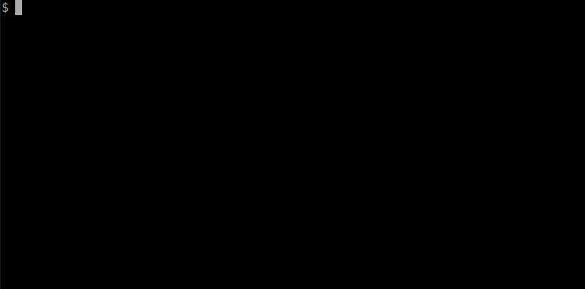
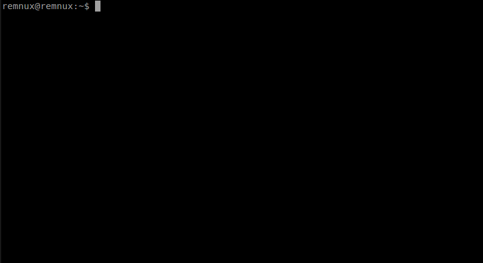
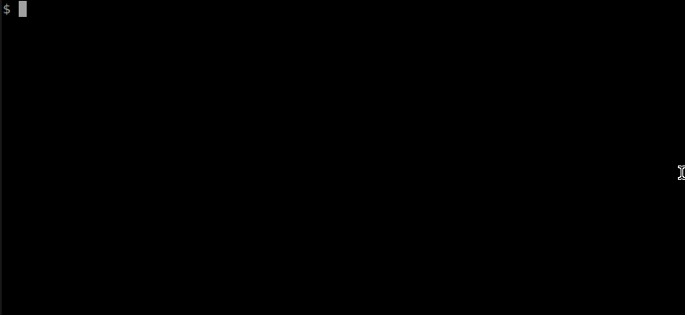
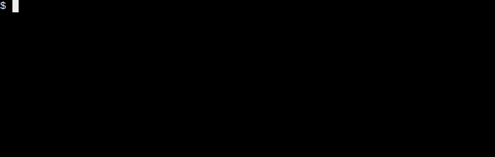

If you’d like to run the tools below without installing the full REMnux Linux distro, you can use the REMnux collection of Docker Images for Malware Analysis. The following page explains which applications are available as images and how to run them, assuming you’ve installed Docker on your underlying host.
Once you’ve installed the desired image, as outlined below, you can update it by using the docker pull command (e.g., sudo docker pull remnux/radare2). To update all locally-cached images, run:
sudo docker images |cut -d' ' -f1 | grep -v REPOSITORY | xargs -I %s sudo docker pull %s
Google’s V8 JavaScript Engine: remnux/v8
Google’s V8 JavaScript Engine can be useful for obfuscating JavaScript embedded in malicious browser pages and PDF files. The REMnux image of this application is available in the the Docker Hub Registry as remnux/v8.
The easiest way to use V8 is to invoke it by first running bash or another shell within its container, and then running the d8 command:
sudo docker run --rm -it remnux/v8 bash
However, since you’ll probably want to provide some files for V8 to examine and get some files back, you will probably want to invoke Docker with the -v parameter to specify a shared directory that the container and the underlying host will be able to access:
sudo docker run --rm -it -v ~/files:/home/nonroot/files remnux/v8 bash
In the example above, the ~/files directory will be shared between your host and the container. Before running the command above, make sure that ~/files exists and that its permissions are world-readable (i.e., chmod a+xwr).
The remnux/v8 image includes a file that defines several objects, methods and properties that malicious JavaScript scripts running in a standalone interpreter will require. This file is located within the container in the ~/def.js location. You might need to modify it to address the needs of your sample.
Once in the container, you might want to invoke the V8 application using a command like this:
d8 -f ~/def.js ~/files/file.js
Thug Low-Interaction Honeyclient: remnux/thug
Thug low-interaction honeyclient can assist with the analysis of suspicious websites. The REMnux image of this application is available in the the Docker Hub Registry as remnux/thug.

The easiest way to use Thug is to invoke it by first running bash or another shell within its container, and then running the ./thug.py command:
sudo docker run --rm -it remnux/thug bash
If you will want to save the log files that Thug creates when assessing the designated website, you will want to invoke Docker with the -v parameter to specify a shared directory that the container and the underlying host will be able to access:
sudo docker run --rm -it -v ~/logs:/home/thug/logs remnux/thug bash
In the example above, the ~/logs directory will be shared between your host and the container. Before running the command above, make sure that ~/logs exists and that its permissions are world-readable (i.e., chmod a+xwr). If you’d like to share an additional directory (e.g., “files”), supply the mapping using another -v parameter such as -v ~/files:/home/thug/files and remember to make the directory on your host world-accessible.
Once in the container, you might want to invoke the Thug application using a command like this:
./thug.py -F http://example.com
The -F parameter directs Thug to enable file logging, so it saves extracted artifacts to “logs” and “files” directories.
If you want Thug to examine a single website and don’t need an interactive shell, you could run its image like this:
sudo docker run --rm -it -v ~/logs:/home/thug/logs remnux/thug ./thug.py -F http://example.com
In the example above, we launched the Thug image and specified that the command to run within it should be ./thug.py http://example.com. We also directed Docker to share the underlying host’s ~/log directory, which is where Thug saved the results of its analysis.

Viper Binary Analysis Framework: remnux/viper
Viper is “a binary management and analysis framework dedicated to malware and exploit researchers.” It’s useful to examine samples and maintain historical records about prior investigations. The REMnux image of this application is available in the the Docker Hub Registry as remnux/viper.
One way to launch Viper is to simply run its container:
sudo docker run --rm -it remnux/viper
This will automatically launch the tool. Alternatively, you could start the container by first running bash or another shell in it, and then running the ../viper/viper.py command with the desired parameters:
sudo docker run --rm -it remnux/viper bash
However, you’ll probably want to share a directory between the container and your underlying host, so that Viper can read your samples and save its analysis. To do this, invoke Docker with the -v parameter to specify a shared directory that the container and the underlying host will be able to access:
sudo docker run --rm -it -v ~/viper-workdir:/home/nonroot/workdir remnux/viper
In the example above, the ~/viper-workdir directory will be shared between your host and the container. Before running the command above, make sure that ~/viper-workdir exists and that its permissions are world-readable (i.e., chmod a+xwr).
Rekall Memory Forensic Framework: remnux/rekall
Rekall is a collection of tools for the extraction and analysis of artifacts from memory images. The REMnux image of this application is available in the the Docker Hub Registry as remnux/rekall.
One way to launch Rekall is to start the container by first running bash or another shell in it, and then running the rekall command with the desired parameters:
sudo docker run --rm -it remnux/rekall bash
However, you’ll probably want to share a directory between the container and your underlying host, so that Rekall can read your memory image files and save its output. To do this, invoke Docker with the -v parameter to specify a shared directory that the container and the underlying host will be able to access:
sudo docker run --rm -it -v ~/files:/home/nonroot/files remnux/rekall bash
In the example above, the ~/files directory will be shared between your host and the container. Before running the command above, make sure that ~/files exists and that its permissions are world-readable (i.e., chmod a+xwr).
To use Rekall’s web console, instead of its command-line interface, invoke the container with the -p parameter to give your host access to the container’s TCP port 8000 like this:
sudo docker run --rm -it -p 8000:8000 -v ~/files:/home/nonroot/files remnux/rekall
Then connect to http://localhost:8000 using a web browser from your underlying host. To stop the container running in this mode, press Ctrl+C in its terminal window.
JSDetox JavaScript Analysis Tool: remnux/jsdetox
JSDetox is a web-based tool for analyzing and deobfuscating JavaScript. The REMnux image of this application is available in the the Docker Hub Registry as remnux/jsdetox.
One way to launch JSDetox, run its container like this:
sudo docker run --rm -p 3000:3000 remnux/jsdetox
Then connect to http://localhost:3000 using a web browser from your underlying host.
To stop the JSDetox container, run sudo docker ps -l on your host to obtain the container ID, then use the sudo docker stopcontainer-id` command and wait about a minute, where “container-id” is the ID of the JSDetox container.
Help expand this collection! You can put together Dockerfile configs for building Docker images of malware analysis applications that are not yet present in the repository. To do this, follow the guidelines in the article Creating Docker Images for REMnux.
Radare2 Reverse Engineering Framework: remnux/radare2
Radare2 is a reverse-engineering framework that includes a disassembler and other capabilities useful for analyzing malicious code. The REMnux image of this application is available in the the Docker Hub Registry as remnux/radare2.
To use Radare2, first run bash or another shell in its container and then specify the rd2 command with the desired parameters. You’ll probably want to share a directory between the container and your underlying host, so that Radare2 can read your samples and save its output. To do this, invoke Docker with the -v parameter to specify a shared directory that the container and the underlying host will be able to access:
sudo docker run --rm -it -v ~/workdir:/home/nonroot/workdir remnux/radare2 bash
In the example above, the ~/workdir directory will be shared between your host and the container. Before running the command above, make sure that ~/workdir exists and that its permissions are world-readable (i.e., chmod a+xwr).
Pescanner Static Malware Analysis Tool: remnux/pescanner
Pescaner is a static malware analysis tool for examining suspicious Windows PE files. It was created by created by Michael Ligh and distributed with the book Malware Analyst Cookbook. The REMnux collection uses the version of this tool that was modified by Glenn P. Edwards Jr. to introduce imphash support.

To use pescanner, first run bash or another shell in its container and then specify the pescanner command, followed by the path to the file you’d like to examine. You’ll probably want to share a directory between the container and your underlying host, so that pescanner can access your samples. To do this, invoke Docker with the -v parameter to specify a shared directory that the container and the underlying host will be able to access:
sudo docker run --rm -it -v ~/workdir:/home/nonroot/workdir remnux/pescanner bash
In the example above, the ~/workdir directory will be shared between your host and the container. Before running the command above, make sure that ~/workdir exists and that its permissions are world-readable (i.e., chmod a+xwr).
The Volatility Framework for Memory Forensics: remnux/volatility
The Volatility Framework for Memory Forensics is a set of libraries and modules for examining memory images for malware and forensic artifacts.

To use Volatility, first run bash or another shell in its container and then specify the vol.py command with the desired parameters:
sudo docker run --rm -it remnux/volatility bash
However, you’ll probably want to share a directory between the container and your underlying host, so that Volatility can read your memory image files and save its output. To do this, invoke Docker with the -v parameter to specify a shared directory that the container and the underlying host will be able to access:
sudo docker run --rm -it -v ~/memdumps:/home/nonroot/memdumps remnux/volatility bash
In the example above, the ~/memdumps directory will be shared between your host and the container. Before running the above, make sure that ~/memdumps exists and that all users have the ability to read from and write to that directory and its contents (i.e., chmod a+xwr).
MASTIFF Static Analysis Framework: remnux/mastiff
MASTIFF is a framework for automatically extracting key static properties from suspicious files.

To use MASTIFF, first run bash or another shell in its container and then specify the mas.py command with the appropriate parameters. You’ll probably want to share a directory between the container and your underlying host, so that MASTIFF can access your samples and provide your with analysis logs. To do this, invoke Docker with the -v parameter to specify a shared directory that the container and the underlying host will be able to access:
sudo docker run --rm -it -v ~/mastiff-workdir:/home/nonroot/workdir remnux/mastiff
In the example above, the ~/mastiff-workdir directory will be shared between your host and the container. Before running the command above, make sure that ~/mastiff-workdir exists and that its permissions are world-readable (i.e., chmod a+xwr).
Maltrieve Malware Samples Downloader: remnux/maltrieve
Maltrieve is a tool for retrieving malware samples.

To launch the Maltrieve image, run the following command, replacing “~/archive” with the path to your working directory on the underlying host. This is where the downloaded malware samples will be deposited.
sudo docker run --rm -it -v ~/archive:/archive remnux/maltrieve
This will launch Maltrieve without any parameters, directing the tool to retrieve malware samples and save them to the ~/archive directory.
If you wish to specify command-line parameters to Maltrieve, then launch it like this:
sudo docker run --rm -it -v ~/archive:/archive remnux/maltrieve bash
This will launch the bash shell in the container, at which point you can run the command “maltrieve”, specifying optional command-line parameters if you wish.
In the examples above, the ~/memdumps directory will be shared between your host and the container. Before running the command, create ~/archive on your host and make it world-accessible
(chmod a+xwr).